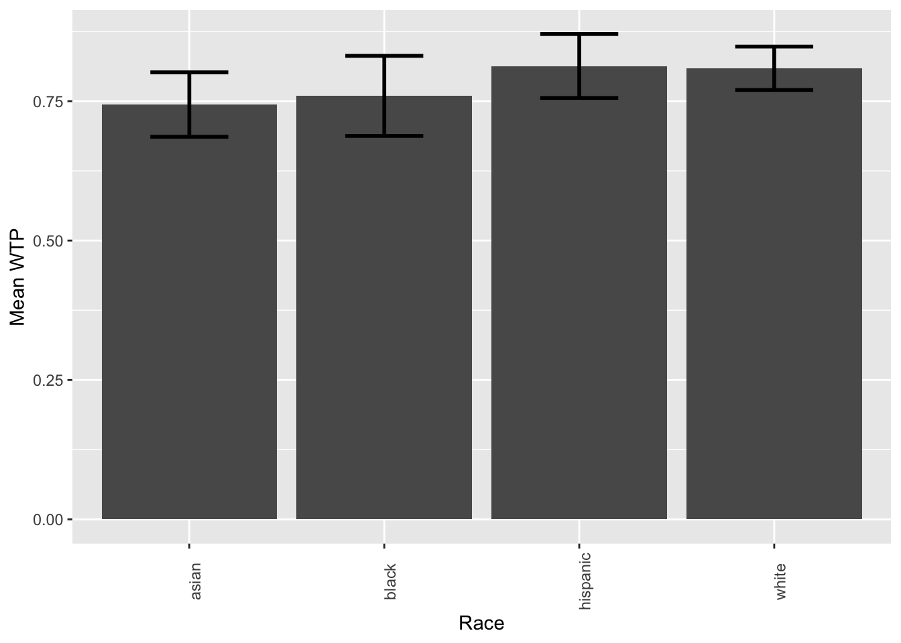
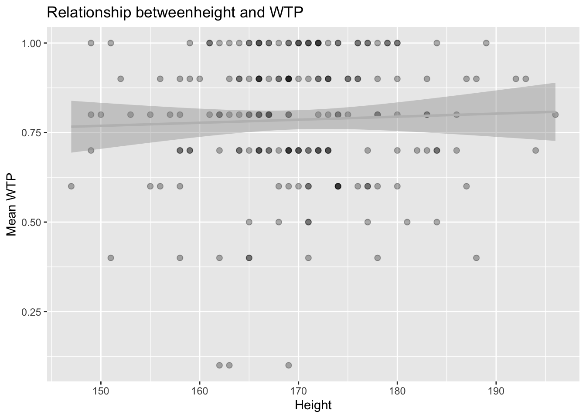

Now you will analyze data from Matthews et al. (2016): Why do we overestimate others’ willingness to pay? The purpose of this research was to test if our beliefs about other people’s affluence (i.e.; wealth) affect how much we think they will be willing to pay for items. You can find the full paper at http://journal.sjdm.org/15/15909/jdm15909.pdf.
Variables description:
Here are descriptions of the data variables (taken from the author’s dataset notes available at http://journal.sjdm.org/15/15909/Notes.txt)
id: participant id codegender: participant gender. 1 = male, 2 = femaleage: participant ageincome: participant annual household income on categorical scale with 8 categorical options: Less than 5,000; 15,001–25,000; 25,001–35,000; 35,001–50,000; 50,001–75,000; 75,001–100,000; 100,001–150,000; greater than 150,000.p1-p10: whether the “typical” survey respondent would pay more (coded 1) or less (coded 0) than oneself, for each of the 10 productstask: whether the participant had to judge the proportion of other people who “have more money than you do” (coded 1) or the proportion who “have less money than you do” (coded 0)havemore: participant’s response when task = 1haveless: participant’s response when task = 0pcmore: participant’s estimate of the proportion of people who have more than they do (calculated as 100-haveless when task=0)Task A
First, download the data_wpa4.csv and matthews_demographics.csv datasets from the data folder on Github and load them in R.
library(tidyverse)
matthews_data = read_csv('https://raw.githubusercontent.com/laurafontanesi/r-seminar22/master/data/data_wpa4.csv')##
## ── Column specification ────────────────────────────────────────────────────────
## cols(
## id = col_character(),
## gender = col_double(),
## age = col_double(),
## income = col_double(),
## p1 = col_double(),
## p2 = col_double(),
## p3 = col_double(),
## p4 = col_double(),
## p5 = col_double(),
## p6 = col_double(),
## p7 = col_double(),
## p8 = col_double(),
## p9 = col_double(),
## p10 = col_double(),
## task = col_double(),
## havemore = col_double(),
## haveless = col_double(),
## pcmore = col_double()
## )demographics = read_csv("https://raw.githubusercontent.com/laurafontanesi/r-seminar22/master/data/matthews_demographics.csv")## Warning: Missing column names filled in: 'X1' [1]##
## ── Column specification ────────────────────────────────────────────────────────
## cols(
## X1 = col_double(),
## id = col_character(),
## height = col_double(),
## race = col_character()
## )glimpse(matthews_data)## Rows: 190
## Columns: 18
## $ id <chr> "R_3PtNn51LmSFdLNM", "R_2AXrrg62pgFgtMV", "R_cwEOX3HgnMeVQHL"…
## $ gender <dbl> 2, 2, 1, 1, 1, 1, 1, 1, 1, 1, 1, 1, 1, 2, 1, 2, 2, 2, 2, 1, 2…
## $ age <dbl> 26, 32, 25, 33, 24, 22, 47, 26, 29, 32, 29, 28, 31, 24, 25, 2…
## $ income <dbl> 7, 4, 2, 5, 1, 2, 3, 4, 1, 7, 4, 3, 2, 2, 6, 3, 2, 2, 1, 3, 3…
## $ p1 <dbl> 1, 1, 0, 1, 1, 1, 1, 1, 1, 1, 1, 1, 0, 1, 1, 0, 1, 1, 1, 1, 0…
## $ p2 <dbl> 1, 1, 1, 1, 1, 1, 1, 1, 1, 1, 1, 1, 0, 1, 0, 1, 1, 1, 1, 1, 1…
## $ p3 <dbl> 1, 1, 1, 1, 0, 0, 0, 0, 0, 1, 1, 0, 0, 1, 0, 1, 0, 1, 1, 1, 1…
## $ p4 <dbl> 1, 1, 1, 1, 1, 0, 0, 0, 1, 1, 1, 1, 1, 1, 1, 1, 1, 1, 1, 1, 1…
## $ p5 <dbl> 1, 1, 1, 1, 1, 1, 1, 0, 0, 1, 1, 0, 0, 1, 1, 1, 1, 1, 1, 1, 1…
## $ p6 <dbl> 1, 1, 1, 1, 1, 1, 1, 1, 1, 1, 1, 0, 1, 1, 0, 1, 1, 0, 1, 1, 1…
## $ p7 <dbl> 1, 1, 1, 1, 1, 1, 1, 1, 1, 1, 1, 1, 1, 1, 1, 1, 0, 1, 1, 1, 0…
## $ p8 <dbl> 1, 1, 1, 1, 1, 1, 1, 1, 1, 0, 1, 1, 1, 1, 1, 1, 1, 1, 1, 1, 1…
## $ p9 <dbl> 1, 1, 0, 1, 1, 0, 1, 0, 1, 1, 1, 0, 1, 1, 1, 1, 1, 1, 1, 1, 1…
## $ p10 <dbl> 1, 1, 0, 1, 1, 1, 0, 0, 1, 1, 1, 0, 1, 1, 0, 1, 0, 1, 1, 0, 1…
## $ task <dbl> 0, 0, 0, 0, 1, 0, 1, 0, 1, 1, 1, 1, 0, 0, 0, 1, 0, 0, 1, 0, 1…
## $ havemore <dbl> NA, NA, NA, NA, 99, NA, 95, NA, 70, 25, 50, 50, NA, NA, NA, 9…
## $ haveless <dbl> 50, 25, 10, 50, NA, 20, NA, 30, NA, NA, NA, NA, 44, 20, 65, N…
## $ pcmore <dbl> 50, 75, 90, 50, 99, 80, 95, 70, 70, 25, 50, 50, 56, 80, 35, 9…glimpse(demographics)## Rows: 190
## Columns: 4
## $ X1 <dbl> 1, 2, 3, 4, 5, 6, 7, 8, 9, 10, 11, 12, 13, 14, 15, 16, 17, 18, …
## $ id <chr> "R_2zOA03wY3kZPHKj", "R_1f30AbYQR0D1wpt", "R_2YgEERKijE2Hz6K", …
## $ height <dbl> 182, 184, 175, 177, 187, 178, 168, 193, 180, 159, 160, 172, 165…
## $ race <chr> "black", "white", "hispanic", "white", "white", "white", "white…Note: do not use pipes from 1 to 4.
gender is coded as 1 and 2. Create a new dataframe called new_matthews_data, in which there is a new column called gender_labels that codes gender as “male” and “female”. Do it using mutate. Then, rename the original gender column to gender_binary using rename. Subtract 1 to all values of gender_binary, so that it is coded as 0 and 1 instead of 1 and 2 using mutate again.new_matthews_data = mutate(matthews_data,
gender_labels = recode(gender,
`1`="male",
`2`="female"))
new_matthews_data = rename(new_matthews_data,
gender_binary = gender)
new_matthews_data = mutate(new_matthews_data,
gender_binary = gender_binary - 1)
head(select(new_matthews_data, gender_binary, gender_labels))## # A tibble: 6 x 2
## gender_binary gender_labels
## <dbl> <chr>
## 1 1 female
## 2 1 female
## 3 0 male
## 4 0 male
## 5 0 male
## 6 0 malenew_matthews_data, create new column called income_labels that codes income based on the data description above using mutate. Then, create a new column, called income_recoded, where you only have 4 income categories (coded as numbers from 1 to 4): below 25,000, 25,000-50,000, 50,000-100,000, and above 100,000 using case_when. How many observations are there for each of these 4 categories? Use summarise to reply.new_matthews_data = mutate(new_matthews_data,
income_lables = recode(income,
`1`='less5,000',
`2`='15,001–25,000',
`3`='25,001–35,000',
`4`='35,001–50,000',
`5`='50,001–75,000',
`6`='75,001–100,000',
`7`='100,001–150,000',
`8`='greater150,000'
),
income_recoded = case_when(income < 3 ~ 1,
income >=3 & income < 5 ~ 2,
income >= 5 & income < 7 ~ 3,
income >=7 ~ 4))
summarise(group_by(new_matthews_data, income_recoded),
n = n())## # A tibble: 4 x 2
## income_recoded n
## <dbl> <int>
## 1 1 72
## 2 2 56
## 3 3 52
## 4 4 10new_matthews_data, transform all numeric columns into integers numbers using mutate_if.new_matthews_data = mutate_if(new_matthews_data,
is.numeric,
as.integer)
head(new_matthews_data)## # A tibble: 6 x 21
## id gender_binary age income p1 p2 p3 p4 p5 p6 p7
## <chr> <int> <int> <int> <int> <int> <int> <int> <int> <int> <int>
## 1 R_3PtNn5… 1 26 7 1 1 1 1 1 1 1
## 2 R_2AXrrg… 1 32 4 1 1 1 1 1 1 1
## 3 R_cwEOX3… 0 25 2 0 1 1 1 1 1 1
## 4 R_d59iPw… 0 33 5 1 1 1 1 1 1 1
## 5 R_1f3K2H… 0 24 1 1 1 0 1 1 1 1
## 6 R_3oN5ij… 0 22 2 1 1 0 0 1 1 1
## # … with 10 more variables: p8 <int>, p9 <int>, p10 <int>, task <int>,
## # havemore <int>, haveless <int>, pcmore <int>, gender_labels <chr>,
## # income_lables <chr>, income_recoded <int>new_matthews_data, create a summary of the dataset using summarise, to answer the following questions: What percent of participants were female? What was the minimum, mean, and maximum income? What was the 25th percentile, median, and the 75th percentile of age? Use good names for columns.summarise(new_matthews_data,
perc_female = mean(gender_binary)*100,
min_income = min(income),
mean_income = mean(income),
max_income = max(income),
perc25_age = quantile(age, .25),
median_age = quantile(age, .5),
perc75_age = quantile(age, .75)
)## # A tibble: 1 x 7
## perc_female min_income mean_income max_income perc25_age median_age perc75_age
## <dbl> <int> <dbl> <int> <dbl> <dbl> <dbl>
## 1 37.4 1 3.53 8 25 30 35summarise in point 2) using pipes and assign the result to new_matthews_data_summary.new_matthews_data_summary = matthews_data %>%
mutate(gender_labels = recode(gender,
`1`="male",
`2`="female")) %>%
rename(gender_binary = gender) %>%
mutate(gender_binary = gender_binary - 1) %>%
mutate(income_lables = recode(income,
`1`='less5,000',
`2`='15,001–25,000',
`3`='25,001–35,000',
`4`='35,001–50,000',
`5`='50,001–75,000',
`6`='75,001–100,000',
`7`='100,001–150,000',
`8`='greater150,000'),
income_recoded = case_when(income < 3 ~ 1,
income >=3 & income < 5 ~ 2,
income >= 5 & income < 7 ~ 3,
income >=7 ~ 4)) %>%
mutate_if(is.numeric,
as.integer) %>%
summarise(perc_female = mean(gender_binary)*100,
min_income = min(income),
mean_income = mean(income),
max_income = max(income),
perc25_age = quantile(age, .25),
median_age = quantile(age, .5),
perc75_age = quantile(age, .75))
print(new_matthews_data_summary)## # A tibble: 1 x 7
## perc_female min_income mean_income max_income perc25_age median_age perc75_age
## <dbl> <int> <dbl> <int> <dbl> <dbl> <dbl>
## 1 37.4 1 3.53 8 25 30 35Task B
new_matthews_data, calculate the mean p1 to p10 across participants using summarise_all and select. Which product scored the highest? Do it again, grouping the data by gender. Is there a difference across gender? What is the mean of the mean p1 to p10 across participants? Calculate it on the result of the previous step. You can do these either using pipes or not.# with pipes
new_matthews_data %>%
group_by(gender_binary) %>%
select(p1:p10) %>%
summarise_all(mean)## Adding missing grouping variables: `gender_binary`## # A tibble: 2 x 11
## gender_binary p1 p2 p3 p4 p5 p6 p7 p8 p9 p10
## <int> <dbl> <dbl> <dbl> <dbl> <dbl> <dbl> <dbl> <dbl> <dbl> <dbl>
## 1 0 0.723 0.849 0.630 0.857 0.790 0.782 0.866 0.874 0.689 0.706
## 2 1 0.648 0.887 0.831 0.845 0.746 0.831 0.859 0.944 0.648 0.775# without pipes
selected_data = select(new_matthews_data, p1:p10, gender_binary)
grouped_data = group_by(selected_data, gender_binary)
summarise_all(grouped_data, mean)## # A tibble: 2 x 11
## gender_binary p1 p2 p3 p4 p5 p6 p7 p8 p9 p10
## <int> <dbl> <dbl> <dbl> <dbl> <dbl> <dbl> <dbl> <dbl> <dbl> <dbl>
## 1 0 0.723 0.849 0.630 0.857 0.790 0.782 0.866 0.874 0.689 0.706
## 2 1 0.648 0.887 0.831 0.845 0.746 0.831 0.859 0.944 0.648 0.775wtp, and the product label in a column called product. Call the resulting dataframe new_matthews_data_long. Re-order it by id. Print the first 20 cases to check this worked. Check that new_matthews_data_long has 10 times more rows than new_matthews_data.# these are the solutions for B2, as we will cover wide to long data transformation later in the seminar
new_matthews_data_long = gather(new_matthews_data,
key='product',
value='wtp',
p1:p10)
new_matthews_data_long = arrange(new_matthews_data_long, id)
head(new_matthews_data_long)## # A tibble: 6 x 13
## id gender_binary age income task havemore haveless pcmore gender_labels
## <chr> <int> <int> <int> <int> <int> <int> <int> <chr>
## 1 R_0JL… 1 45 4 1 80 NA 80 female
## 2 R_0JL… 1 45 4 1 80 NA 80 female
## 3 R_0JL… 1 45 4 1 80 NA 80 female
## 4 R_0JL… 1 45 4 1 80 NA 80 female
## 5 R_0JL… 1 45 4 1 80 NA 80 female
## 6 R_0JL… 1 45 4 1 80 NA 80 female
## # … with 4 more variables: income_lables <chr>, income_recoded <int>,
## # product <chr>, wtp <int>Task C
X1 column in demographics using select.demographics = select(demographics, -c(X1))
head(demographics)## # A tibble: 6 x 3
## id height race
## <chr> <dbl> <chr>
## 1 R_2zOA03wY3kZPHKj 182 black
## 2 R_1f30AbYQR0D1wpt 184 white
## 3 R_2YgEERKijE2Hz6K 175 hispanic
## 4 R_1CdL2n22srUR26d 177 white
## 5 R_1HnsqBRimnKphfg 187 white
## 6 R_12PUXbJhfNF9GAE 178 whitenew_matthews_data_long and demographics based on the id, in order to retain as many rows and columns as possible. Call the resulting dataframe matthews_data_all.matthews_data_all = full_join(new_matthews_data_long, demographics, by="id")
head(matthews_data_all)## # A tibble: 6 x 15
## id gender_binary age income task havemore haveless pcmore gender_labels
## <chr> <int> <int> <int> <int> <int> <int> <int> <chr>
## 1 R_0JL… 1 45 4 1 80 NA 80 female
## 2 R_0JL… 1 45 4 1 80 NA 80 female
## 3 R_0JL… 1 45 4 1 80 NA 80 female
## 4 R_0JL… 1 45 4 1 80 NA 80 female
## 5 R_0JL… 1 45 4 1 80 NA 80 female
## 6 R_0JL… 1 45 4 1 80 NA 80 female
## # … with 6 more variables: income_lables <chr>, income_recoded <int>,
## # product <chr>, wtp <int>, height <dbl>, race <chr>wtp per subject using group_by. You can use pipes or not. Called the resulting dataframe mean_matthews_data_all. This should have as many rows as the number of subjects and 2 columns (id and mean wtp). Add as a third and fourth columns heigth and race using one of the join functions.mean_matthews_data_all = matthews_data_all %>%
group_by(id) %>%
summarise(mean_wtp=mean(wtp))
mean_matthews_data_all = full_join(mean_matthews_data_all, demographics, by="id")
head(mean_matthews_data_all)## # A tibble: 6 x 4
## id mean_wtp height race
## <chr> <dbl> <dbl> <chr>
## 1 R_0JLtfRpOyh8pOCN 0.9 176 black
## 2 R_0O52mja29pBTphb 0.6 171 asian
## 3 R_0OnZ5ZwmVAU6w2V 0.8 150 hispanic
## 4 R_0oXJeSTrYNzQlRH 0.8 180 asian
## 5 R_10CVQqqmFiczGPS 0.7 173 asian
## 6 R_10HKEOMi0HhWe7T 0.7 177 asianmean_matthews_data_all, make a barplot showing the mean wtp across ethnic groups. Plot confidence intervals. Give appropriate labels to the plot. Do you think there is a difference in willingness to pay across groups?# these are the solutions for B4, as we will cover plotting later in the seminar
ggplot(data = mean_matthews_data_all, mapping = aes(x = factor(race), y = mean_wtp)) +
stat_summary(fun = "mean", geom="bar") +
stat_summary(fun.data = mean_cl_normal, geom = "errorbar", size=1, width=.4) +
labs(x = 'Race', y = 'Mean WTP') +
theme(axis.text.x = element_text(angle = 90))
mean_matthews_data_all, make a scatterplot showing the wtp on the y-axis and the height on the x-axis. Add a regression line. Do you think height predicts willingness to pay?# these are the solutions for B5, as we will cover plotting later in the seminar
ggplot(data = mean_matthews_data_all, mapping = aes(x = height, y = mean_wtp)) +
geom_point(alpha = 0.3, size= 2) +
geom_smooth(method = lm, color='grey') +
labs(x='Height', y='Mean WTP') +
ggtitle("Relationship betweenheight and WTP")## `geom_smooth()` using formula 'y ~ x'
Save and email your script to me at laura.fontanesi@unibas.ch by the end of Friday.